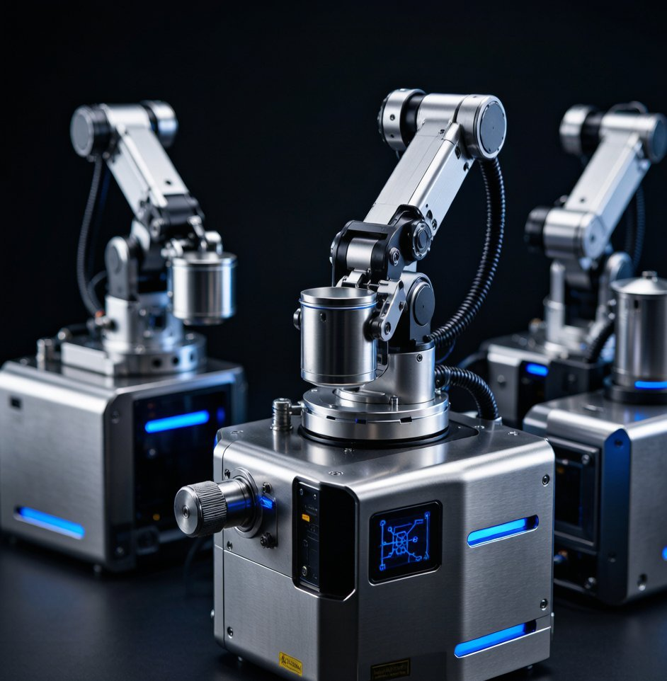

A modular structure with optional robotic-arm solutions, enabling deep JDM co-development and brand-exclusive customization.
This Dongji-built model fits a range of commercial kitchens and operations.
Define an exclusive product and win differentiation.
Co-create the tech roadmap and patents with Dongji.
Lift experience and positioning with differentiated equipment.
Quickly expand the product matrix and SKUs.
Typical configuration; actual specs can be tuned per OEM / ODM / JDM needs.
| Structure | Modular, expandable |
|---|---|
| Automation | Optional robotic-arm |
| Engagement | JDM co-development |
| Certification | Per target market |
| MOQ | Project-based |
| Delivery | Concept to mass production |
Common questions about this model.
Standard is fast rebranding; custom redefines structure and interaction.
Both teams jointly define requirements, solution and patent ownership.
Shorter than building from scratch by reusing mature modules.
Ownership can be defined in the agreement; Dongji keeps strict confidentiality.